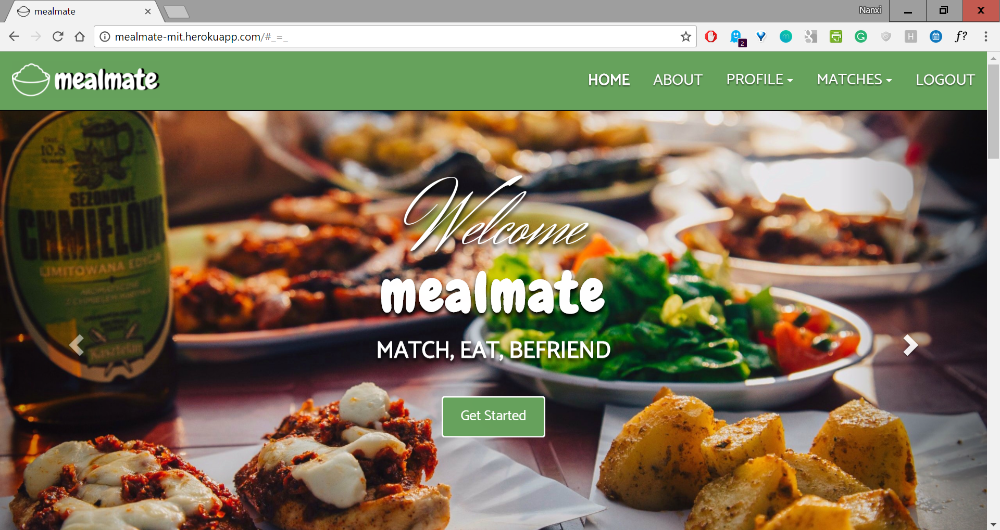
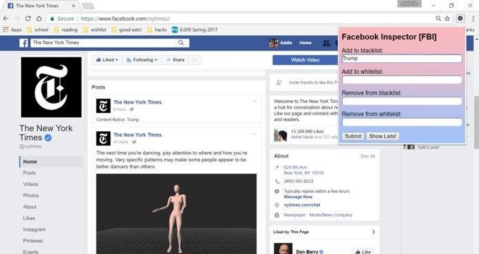
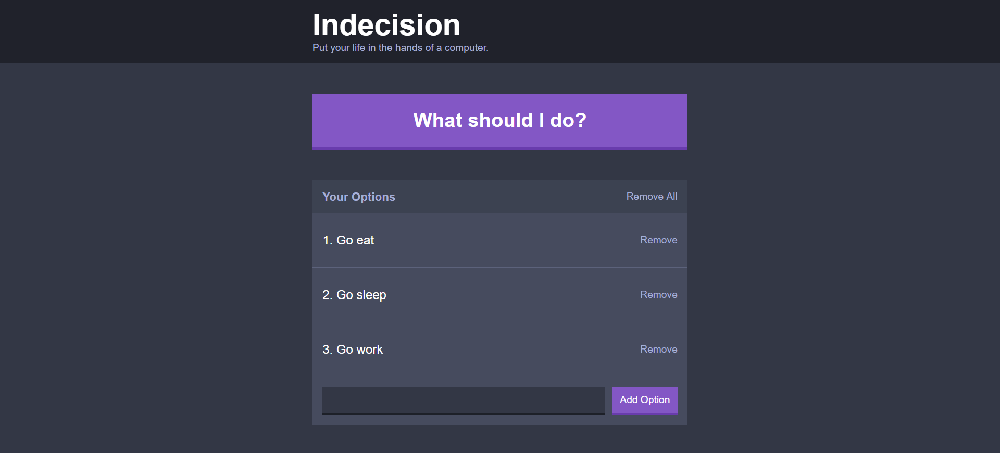
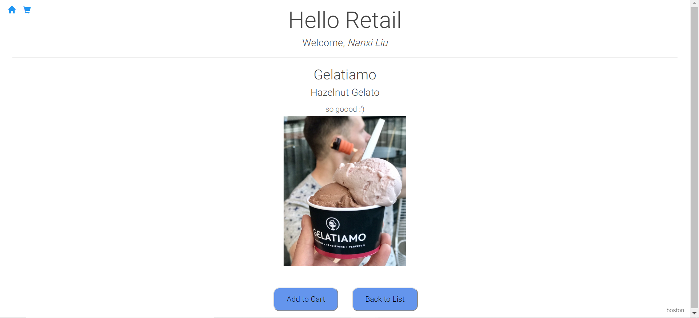
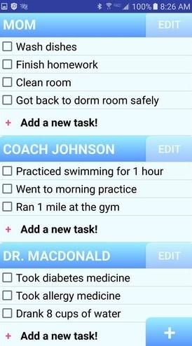
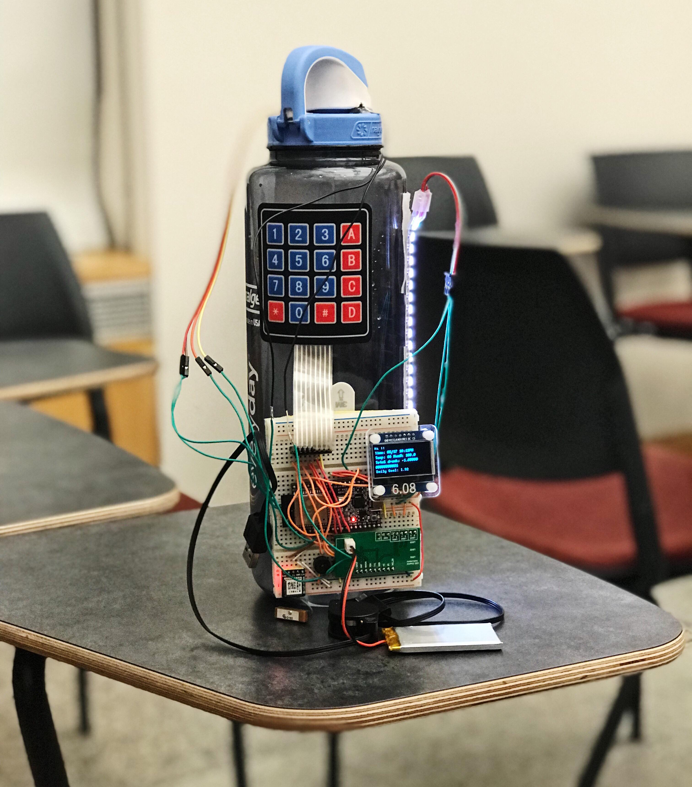
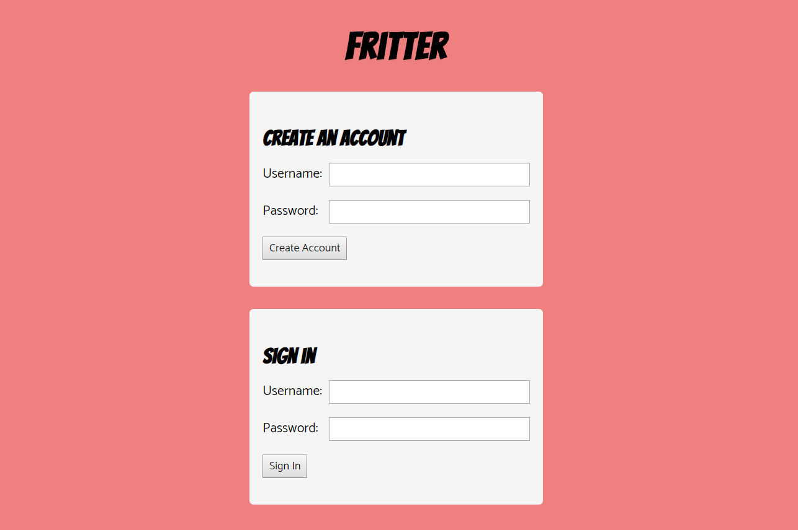
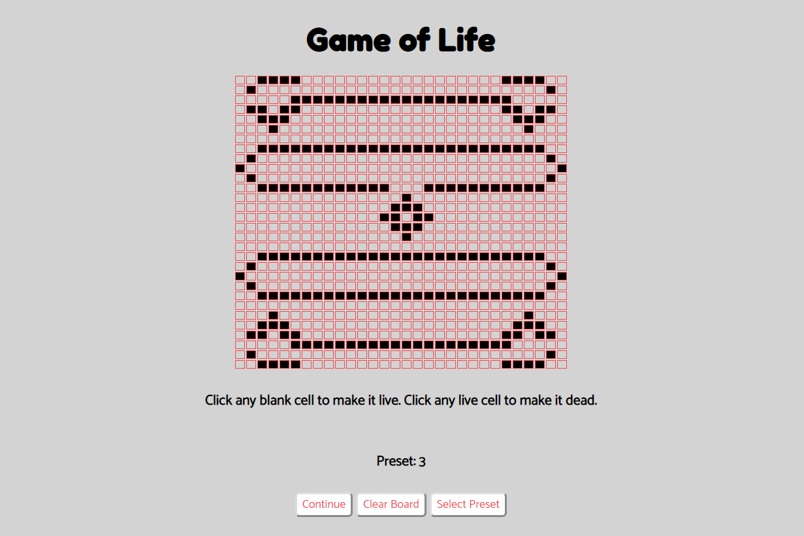

Used: HTML, CSS, JavaScript, Bootstrap, Node, Express, AWS S3, Facebook Authentication, Heroku, mLab (mongoDB)
mealmate pairs MIT students up to eat at dining halls. It helps people who are looking to make new friends,
not eat alone, or reconnect with existing friends. This project was my first exposure to all the wonders of
web development, and I created it in a team of three during IAP in 6.148 - Web Development. I was in charge
of the front-end and loved learning about HTML, CSS, and Javascript, often staying up until the AMs (willingly!)
because I thought web dev was so fun. In the end, my team won the “Most Valuable for MIT” award and was a
semifinalist in the competition portion of the class.

Used: HTML, CSS, JavaScript, jQuery
FBI is a Chrome extension that allows users to hide Facebook posts that may elicit a strong or harmful
emotional response. Users can insert words or phrases representative of posts that they do not want to see
on their timeline. Posts with flagged content will be hidden, displaying only the flagged keywords
and the content creator, but can be opened up by clicking on them. I developed this project
in a team of four at my first hackathon, WHACK 2017, and we won the #HackHarassment award for
promoting safe spaces and harassment reduction.

Used: React JSX, SCSS, Javascript, HTML, Node, Babel, Webpack, React-Modal
Indecision is a React decision-making web app that helps you make decisions based of off your inputted options!
This is the first project created off of taking
The Complete React Web Developer Course (with Redux) on Udemy by Andrew Mead. Because I had never
worked with React before, I learned so much about front-end and new technologies - previously, I had
done web development primarily with HTML, CSS, and Javascript, so it was interesting to see the
similarities and differences.

Used: React JSX, SCSS, Javascript, HTML, Node, Babel, Webpack, AWS Services
(Lambda, Kinesis, API Gateway, DynamoDB, IAM)
Hello, Retail! is a Nordstrom Technology open-source project. Hello, Retail! is a 100% serverless,
event-driven framework and functional proof-of-concept showcasing a central unified log approach
as applied to the retail problem space. All code and patterns are intended to be re-usable for
scalable applications large and small. This past summer, I was at Nordstrom Technology as a
software engineering intern, working on adding an Add to Cart feature, uploading Nordstrom's
catalog of 130,000 products to HR, and updating its front-end.

Used: Android Studio, Java, XML, SQL, SQLite
Checks is an Android application that is like an accountable to-do list. Each section is for a
particular person, who will get email updates about which tasks are completed. Checks works well
for informing parents, family, coaches, or doctors about tasks that are being completed, and the
frequency of the emails can be adjusted. The app utilizes external social pressure to make it
more likely that you actually complete your goals. I created this project in a team of three
at HackPrinceton Spring 2017.

Used: C++, HTML, CSS, SQL, ESP32 Arduino, Fluid Level Sensor, LED Strip, OLED,
Buzzer, Button, GPS, Battery, WiFi Chip
ThirsT is a smart water bottle that will automatically track the amount of water -
or other beverage of your choice - you consume in a day, as well as provide reminders
when you haven't been drinking enough water based off of information you can input
about your height, weight, age, and gender. ThirsT will also adjust the amount of liquid
needed based on location and the current temperature. I created this project in a team
of four in 6.08 - Interconnected Embedded Systems.

Used: Vue.js, HTML, CSS, Javascript, SQL, PHP, Jest, Express, Node, Heroku
Fritter, or Fake Twitter, is a Vue.js application that I created in my 6.170, Software Studio,
class. Over 4 weeks, I 1) implemented server-side functionality and an API to handle user accounts
and allow users to create, read, update, and delete short messages called Freets, 2) designed a graphical
UI for Fritter and use Vue,js, 3) use a SQL database for persistent storage, and 4) test and attack
Fritter and fix security vulnerabilites.

Used: HTML, CSS, Javascript
The Game of Life is a static HTML, CSS, and Javascript web app that I created in 6.170, Software Studio.
This is modelled after Conway's Game of Life, with the same rules. In this implementation, a user can click
squares to make them turn from dead to alive, and then click "Start", "Pause", and "Continue" at any
time to see what happens. A user can also select 1 of 5 preset boards and then click the "Start",
"Pause", and "Continue" buttons to see what happens.